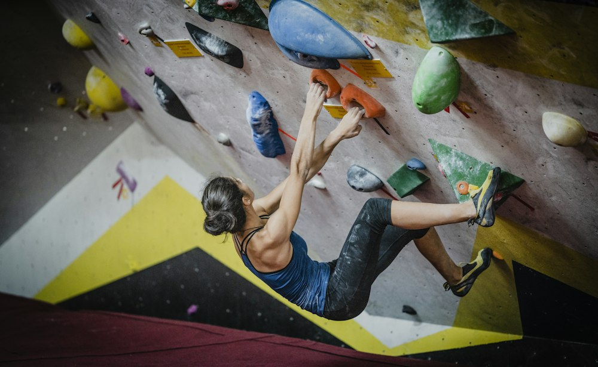

Hike with friends
My recent hike was a reminder that a little distance, a good conversation, and a change of scenery can reset my whole week.
More trails are on the list.Adventure notes / keep moving
I recently went hiking with friends, and it reminded me how much I like plans that put me somewhere unfamiliar. I’m still figuring out my favorite adventures, which is part of the point.

My adventure list
I like trying things with people I’m comfortable being a beginner around. The goal is less about being good immediately and more about leaving with a story.
My recent hike was a reminder that a little distance, a good conversation, and a change of scenery can reset my whole week.
More trails are on the list.Indoor climbing is exactly the kind of challenge I like: physical, slightly intimidating, and easy to turn into a shared afternoon.
Start low, learn the route, keep going.I’m always open to a new spot, a new activity, or a plan that was not on the calendar an hour ago.
That’s how the good stories usually happen.